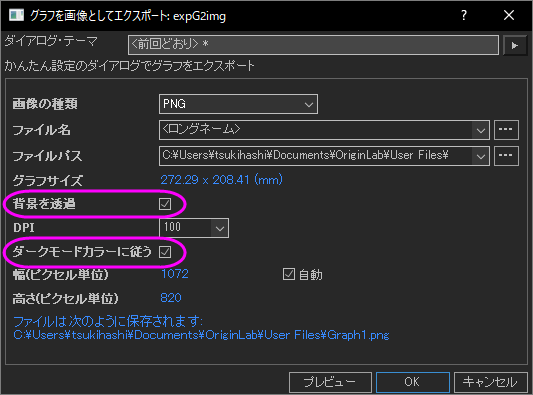
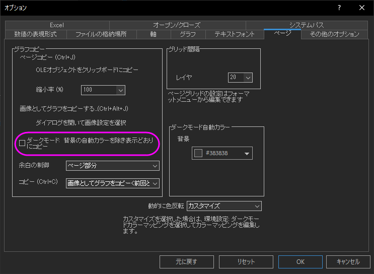
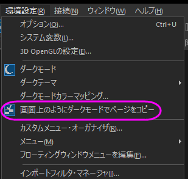

FAQ-1199 グラフをエクスポートするときにダークモードの色を保持したくない場合はどうすればよいでしょうか?
Turn-off-Dark-Mode-for-Export
最終更新日：2024/8/29
ダークモードの場合、グラフをエクスポートするとデフォルトでは見た目のままで出力されます。エクスポート時にダークモードの配色を保持しない場合
- ファイルメニューからグラフを画像としてエクスポートまたはグラフエクスポート(詳細)を選択してエクスポートする場合、ダークモードカラーに従うのチェックを外します。
作図の詳細ダイアログで背景色が 自動(デフォルト設定)の場合、エクスポートダイアログの背景を透過チェックボックスを使用して、エクスポートされるグラフの背景を白のままにするか、透明にするかを制御できます。

または
- グローバル設定の場合は、メニュー環境設定：オプションを選択します。ページタブで、ダークモード:背景の自動カラーを除き表示どおりにコピーのチェックを外します。これでライトモードの色に従ってグラフをエクスポートします。また、作図の詳細ダイアログの背景色が自動 (デフォルト設定) に設定されている場合、黒ではなく白背景でエクスポートされます。

さらに、グラフページをコピーしてPPTなどの他のアプリケーションに貼り付けると、環境設定: 画面上のようにダークモードでページコピーの選択を解除して、グラフをライトモードのようにエクスポートできます。

キーワード:ダークモード, ライトモード, ダークカラー, グラフのエクスポート, ページのコピー, エクスポートのダークカラーをオフに, ライトモードとしてエクスポート